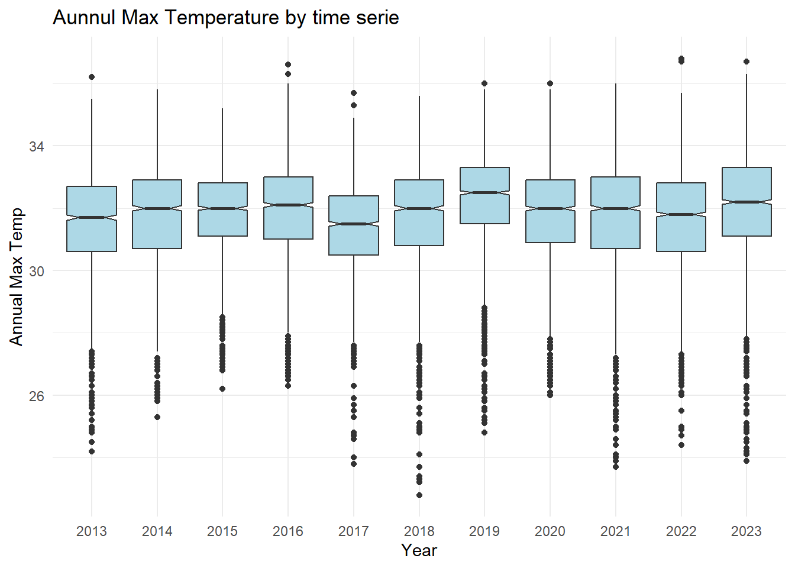
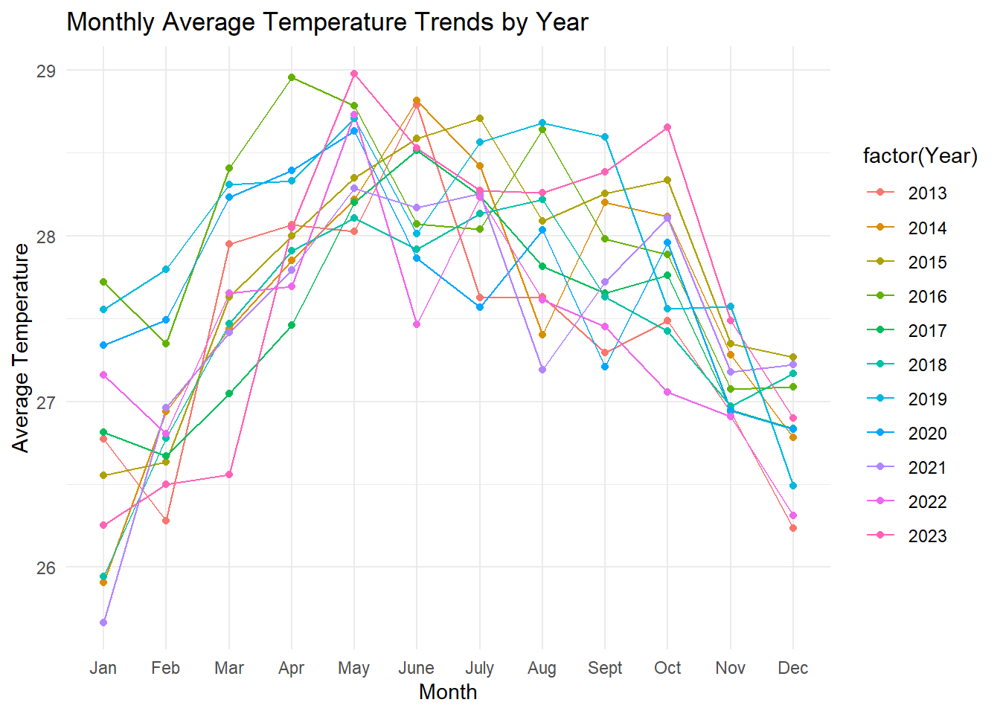

pacman::p_load(ggrepel, patchwork,
ggthemes, hrbrthemes,
scales, viridis, lubridate,
ggthemes, gridExtra, readxl, knitr,
data.table, CGPfunctions,
ggHoriPlot, tidyverse,ggiraph, plotly,
patchwork, DT,ggdist, ggridges, ggthemes,
colorspace,ggstatsplot,readxl, performance,
parameters, see,ungeviz, plotly, crosstalk,
DT, ggdist, ggridges,colorspace, gganimate,
FunnelPlotR,readxl, gifski, gapminder,gganimate,ggpubr, ggplot2)Temperature Anlytic Modules for Visual Analytics Shiny Application
Temperature

1.Introduction
In this section, we will delve into the historical temperature data of Singapore, aiming to gain a thorough insight through the creation of various interactive tools. Additionally, we will employ statistical tests and visualization techniques to substantiate the claim depicted in the charts—that there has been a temperature increase of 0.25 degrees per decade and daily mean temperatures are projected to increase by 1.4 to 4.6 degrees.
2. Install Package
3. Data Preparation
3.1 About the Data
We aggregate monthly observations from 2013 to 2023, sourced from five distinct weather stations strategically located across Singapore’s geographic regions. This process involves the meticulous integration of data sets to represent a comprehensive view of Singapore’s climatic conditions over the specified period. This aggregated data set is already created for our group project.
3.2 Put Data into R environment
weatherdata <- read_rds("data/weatherdata.rds")
summary(weatherdata) Station Year Month Day
Length:19629 Length:19629 Length:19629 Length:19629
Class :character Class :character Class :character Class :character
Mode :character Mode :character Mode :character Mode :character
Rainfall MeanTemp MaxTemp MinTemp
Min. : 0.000 Min. :22.20 Min. :22.80 Min. :20.00
1st Qu.: 0.000 1st Qu.:26.90 1st Qu.:30.90 1st Qu.:24.10
Median : 0.200 Median :27.70 Median :32.00 Median :25.00
Mean : 6.327 Mean :27.66 Mean :31.75 Mean :25.01
3rd Qu.: 6.000 3rd Qu.:28.50 3rd Qu.:32.90 3rd Qu.:25.90
Max. :210.600 Max. :30.80 Max. :36.80 Max. :29.00
NA's :460 NA's :649 NA's :587 NA's :587
MeanWind MaxWind
Min. : 0.400 Min. : 8.30
1st Qu.: 5.800 1st Qu.: 27.00
Median : 7.200 Median : 31.70
Mean : 7.984 Mean : 32.77
3rd Qu.: 9.400 3rd Qu.: 37.40
Max. :31.300 Max. :105.50
NA's :800 NA's :796 3.3 Data Wrangling
We will develop multiple sub-tables to perform the analysis
annual_avg_temp <- weatherdata %>%
group_by(Year) %>%
summarise(AnnualAverageMeanTemp = mean(MeanTemp, na.rm = TRUE))
monthly_avg_temp <- weatherdata %>%
group_by(Year,Month) %>%
summarise(MeanTemp = mean(MeanTemp, na.rm = TRUE))
monthly_avg_temp$Month <- factor(monthly_avg_temp$Month,
levels = 1:12,
labels =
c("Jan", "Feb", "Mar", "Apr", "May", "June", "July", "Aug","Sept", "Oct", "Nov", "Dec"),
ordered = TRUE)
Daily_avg_temp <- weatherdata %>%
group_by(Year,Month,Day) %>%
summarise(AnnualAverageMeanTemp = mean(MeanTemp, na.rm = TRUE))4.Exploratory Data Analysis
4.1 Rain Cloud Plot: Annual Average Temperature by Station
annual_avg_temp_bystation <- weatherdata %>%
group_by(Year,Month,Station) %>%
summarise(MonthlyMeanTemp = mean(MeanTemp, na.rm = TRUE))
ggplot(annual_avg_temp_bystation, aes(x = Station, y = MonthlyMeanTemp)) +
stat_halfeye(aes(fill=Station),adjust = 0.5, point_colour = NA) +
geom_boxplot(width = 0.2, outlier.shape = NA) +
stat_dots(side = "left",
justification = 1.2,
binwidth = .05,
dotsize = 0.1) +
coord_flip() +
theme_economist() Observation: The Rain cloud Plot indicates a marginally elevated mean temperature at the Changi station, which corresponds to the eastern region of Singapore. This suggests that Changi experiences a greater number of warmer days compared to other areas.
4.2 Historical Temperature Comparison By Stations
monthly_avg_temp_bystation <- weatherdata %>%
group_by(Year,Month,Station) %>%
summarise(MeanTemp = mean(MeanTemp, na.rm = TRUE))
monthly_avg_temp_bystation$Month <- factor(monthly_avg_temp_bystation$Month,
levels = 1:12,
labels =
c("Jan", "Feb", "Mar", "Apr", "May", "June", "July", "Aug","Sept", "Oct", "Nov", "Dec"),
ordered = TRUE)
gg <- ggplot(monthly_avg_temp_bystation ,
aes(x = Month,
y = MeanTemp,
size = MeanTemp,
color = as.factor(Station)
)) +
geom_point(aes(size = 0.1 ,frame=Year),
alpha = 0.7) +
scale_size(range = c(2, 12)) +
labs(x = 'Month',
y = 'Mean Temp') +
theme(legend.position='bottom') +
guides(color = guide_legend(title = "Year",
override.aes = list(size = 3),
ncol = 1))
ggplotly(gg)Observation: The same result can be obtained as 4.1, over the past decade, Changi Station has recorded higher temperatures compared to other regions.
4.3 Slope Graph: Temperature Changed By Region
weatherdata %>%
group_by(Year,Station) %>%
summarise(AnnualAverageMeanTemp = mean(MeanTemp, na.rm = TRUE))%>%
filter(Year %in% c(2013, 2023)) %>%
newggslopegraph(Year, AnnualAverageMeanTemp,Station,
Title = "Temerature Changed by Regions",
SubTitle = "2013-2023",)Observation: Examining the data solely from 2013 to 2023, every station exhibits a discernible upward trend, signaling an overall rise in average temperatures over the previous decade. And Changi which represent the East region has higher temperature.
weatherdata %>%
group_by(Year) %>%
summarise(AnnualAverageMeanTemp = mean(MeanTemp, na.rm = TRUE))%>%
filter(Year %in% c(2013, 2023)) %>%
mutate(Location = "Singapore") %>%
newggslopegraph(Year,AnnualAverageMeanTemp, Location,
Title = "Temerature Changed in Singapore",
SubTitle = "2013-2023",)Observation: Comparing the average temperatures across the five stations, we observe a 0.28-degree rise from the last decade, corroborating the assertion that temperatures have been increasing by 0.25 degrees every ten years. Yet, to verify the claim that the daily mean temperature will rise by 1.6 to 4.6 degrees, a more comprehensive analysis of the trend is needed.
4.4 Box plot: Annual Temperature Comparison
ggplot(weatherdata, aes(x = Year, y = MeanTemp)) + geom_boxplot(fill = "lightblue", notch = TRUE) + labs(title = "Aunnul Mean Temperature by time serie", x = "Year", y = "Annual Mean Temp") + theme_minimal()
ggplot(weatherdata, aes(x = Year, y = MaxTemp)) +
geom_boxplot(fill = "lightblue", notch = TRUE) +
labs(title = "Aunnul Max Temperature by time serie", x = "Year", y = "Annual Max Temp") +
theme_minimal()
ggplot(weatherdata, aes(x = Year, y = MinTemp)) + geom_boxplot(fill = "lightblue", notch = TRUE) + labs(title = "Aunnul Min Temperature by time serie", x = "Year", y = "Annual Min Temp") + theme_minimal()
Observation: Upon analyzing the maximum, minimum, and average temperatures over the past decade, no definitive trend of increasing temperatures emerges. Further, more detailed examinations will be carried out to substantiate this observation.
4.5 HeatMap: Mean Temperature by Year and Month
gg <- ggplot(monthly_avg_temp, aes(x = Year, y = Month, fill = MeanTemp)) +
geom_tile(color = "white", size = 0.1) +
theme_tufte(base_family = "Helvetica") +
scale_fill_gradient(name = "Annual Avg Temp",
low = "sky blue", high = "dark blue") +
labs(title = "Heat Map of Temperature by Year & Month") +
theme(axis.ticks = element_blank(),
axis.text.x = element_text(size = 7),
plot.title = element_text(hjust = 0.5),
legend.title = element_text(size = 8),
legend.text = element_text(size = 6))
ggplotly(gg)Observation: Analyzing the heat map, there’s no definitive indication of a rising temperature trend over the past decades. However, it is observable that Singapore experiences its warmest months from April through October.
4.6 Monthly Average Temperature Trends by Year
ggplot(monthly_avg_temp, aes(x = factor(Month), y = MeanTemp, group = Year, color = factor(Year))) +
geom_line() +
geom_point() +
theme_minimal() +
labs(title = "Monthly Average Temperature Trends by Year", x = "Month", y = "Average Temperature")
Observation: Adopting this method allows for a clearer perspective on Singapore’s temperature trends. By analyzing the data in this manner, we can independently verify the finding that Singapore’s warmest months span from April to October, paralleling insights obtained from heat map visualizations.
5 Confirmatory Data Analysis
5.1: Trend Analysis of Temperature
Since in the visualization part, we can not detect any specific trend of temperature from past decade. We will perform a trend analysis to examine whether there is a general trend in the temperature data over these years, indicating global warming or any other significant climatic change
model <- lm(AnnualAverageMeanTemp ~ as.numeric(Year), data = annual_avg_temp)
summary(model)
Call:
lm(formula = AnnualAverageMeanTemp ~ as.numeric(Year), data = annual_avg_temp)
Residuals:
Min 1Q Median 3Q Max
-0.22309 -0.19482 -0.04792 0.14069 0.36155
Coefficients:
Estimate Std. Error t value Pr(>|t|)
(Intercept) 36.988210 44.823260 0.825 0.431
as.numeric(Year) -0.004621 0.022212 -0.208 0.840
Residual standard error: 0.233 on 9 degrees of freedom
Multiple R-squared: 0.004786, Adjusted R-squared: -0.1058
F-statistic: 0.04328 on 1 and 9 DF, p-value: 0.8398ggplot(annual_avg_temp, aes(x = as.numeric(factor(Year)), y = AnnualAverageMeanTemp)) +
geom_point(aes(group = 1)) +
geom_smooth(method = "loess", color = "blue", aes(group = 1)) +
scale_x_continuous(breaks = as.numeric(factor(unique(annual_avg_temp$Year))), labels = unique(annual_avg_temp$Year)) + # Adjust the x-axis labels to show years as characters
labs(title = "Long-term Temperature Trend", x = "Year", y = "Average Temperature")
From section 4.3 we can conclude that the temperature indeed increase in previous decade
Based on this analysis, there doesn’t appear to be a significant trend in the annual average mean temperature over the years.We can infer that relying solely on temperature data from the past decade to predict future temperatures will likely not result in an increase of 1.4 to 4.6 degrees, as previously suggested by the chart.